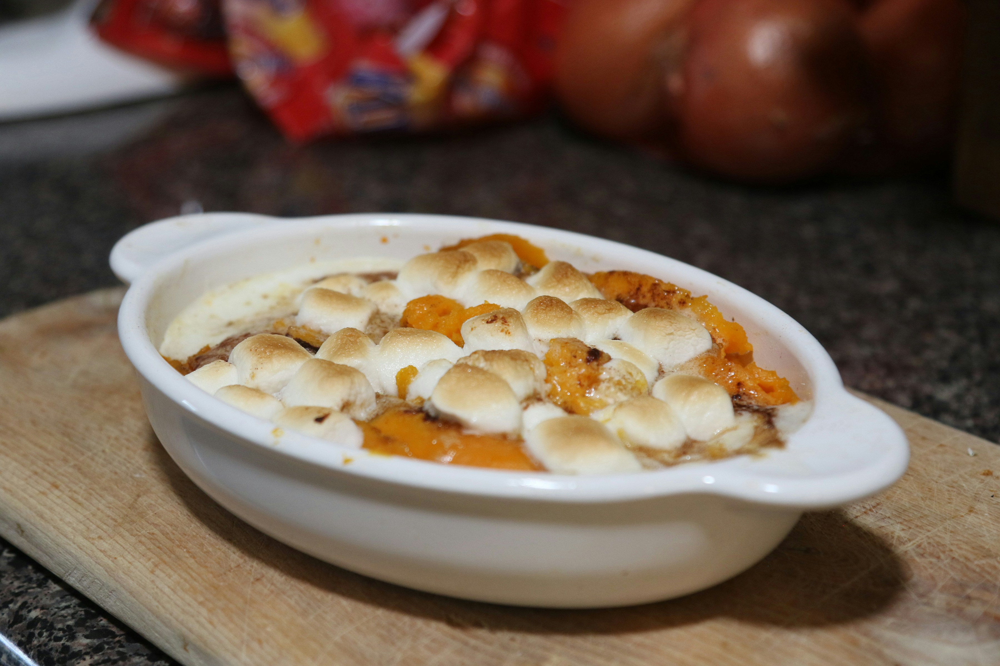

Sweet Potato Casserole

Description
This baked sweet potato casserole topped with a delicious pecan topping is so good and creamy. Try this recipe during festivals and it will surely become your new tradition!
Preparation Details
- Prep Time:
- 20 mins
- Cook Time:
- 45 mins
- Servings:
- 12
Ingredients
- Sweet Potatoes
- Eggs
- Sugar
- Milk
- Butter
- Vanilla Extract
- Brown Sugar
- Flour
- Pecans
Steps
- Cook and mash the sweet potatoes.
- Mix the casserole ingredients and transfer it to a baking dish.
- Make the topping and sprinkle it over the sweet potato mixture.
- Bake until the topping is lightly browned.